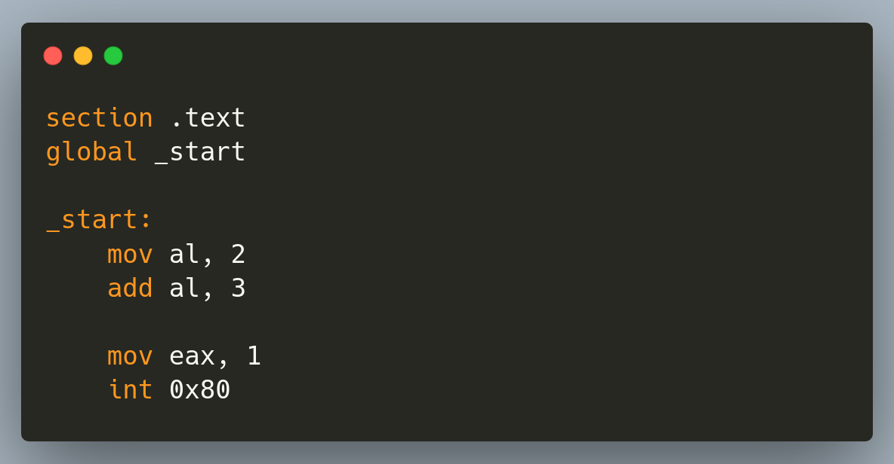
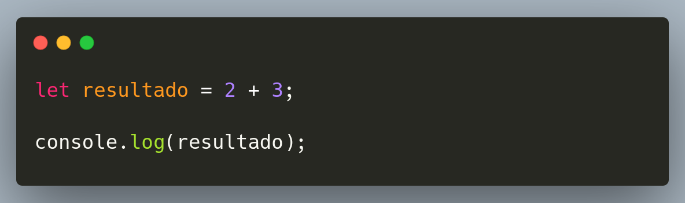

Uma breve história
da programação
Uma breve história
da programação
O que era? O que é? E o que vai ser dessa área?
Otimismo, Resiliência e o Fim do Princípio
“O sucesso não é definitivo, o fracasso não é fatal.É a coragem de continuar
”
que conta.
Desde 1950, nos dizem que o programador vai acabar.
Alessandro Feitoza
- Fortaleza, Ceará
- Professor de códigos e outras computarias
- Programador/Dev/Severino
- PHP com Rapadura
- PHPeste
- Bússola Social / Digital College

- 1830: primeira* calculadora
- 1940: 1a geração computadores (Valvulas)
- 1960: 2a geração (transistores)
- 1971: 3a circuitos integrados (chips)
- > 1971: microprocessadores, PCs, smartphones, o escambau
Transição do Hardware pro Software
O desafio?
O desafio?
Ensinar a máquina
O desafio?
Ensinar a máquina
Programá-la
Cartões Perfurados
- Programar era mecânico.
- Um erro custava dias de espera.
- O Medo: "Linguagens de alto nível (Fortran) vão tirar o emprego de quem entende a máquina."
o Fortran tá contra mim
Baixo nível
vsAlto nível

O que esse código faz?

SOFTWARE LIVRE
&
Código Aberto
O manifesto de 1983 mudou tudo.
as 4 Liberdades essenciais
Todo software deve ser livre pra
- Executar
- Estudar*
- Redistribuir
- Melhorar*
Software Livre & Código Aberto
Resultado:
"Criamos" a base de toda a internet moderna.
Frameworks & Bibliotecas
Frameworks & Bibliotecas
Automatizamos o visual e a estrutura.
2014: "O Web Designer morreu".
Realidade: Focamos em UX e complexidade de dados.
Backend x Frontend
O fim do mundo como conheciamos
30 de Novembro de 2022: Lançamento do ChatGPT.O Oráculo
Substituímos a busca manual pela conversa.
Stack Overflow
ChatGPT
O Junior não "morreu", ele ganhou um tutor 24/7.
O Copiloto
Desenvolvimento Sugerido (GitHub Copilot).
function calculateRisk(user) {
// IA sugere a lógica baseada no contexto...
}
Não paramos de escrever, paramos de digitar o óbvio.
A ascensão do copilot começou a ganhar força em 2023
O Arquiteto
A IA dirige. O Humano é o Comandante.
Saímos da sintaxe para a estratégia.
A Escalada da Capacidade
| Era | Papel | Alavancagem |
|---|---|---|
| Punched Cards | Operador | 1x |
| Frameworks | Engenheiro | 100x |
| IA Agentic | Comandante | 1000x |
O Novo arquiteto
A gente é pago pra resolver problema, não pra escrever código.
A IA escreve o paragrafo!
"Mas é você o autor do livro."